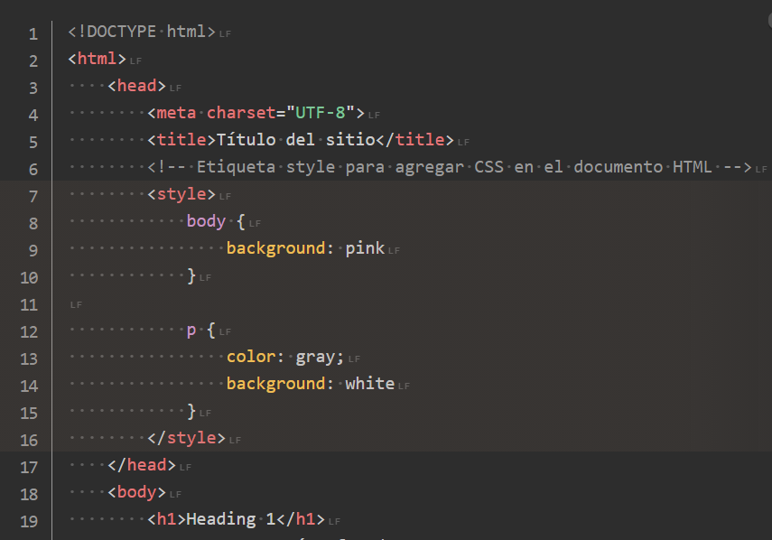

CSS Conceptos Básicos
CSS de sus siglas en inglés Cascading Style Sheets o traducido al español Hojas de Estilo en Cascada, describe cómo se mostrarán los elementos HTML en las pantallas de nuestros
Se puede controlar el diseño de varias páginas web a la vez con solo un archivo .CSS.
Sintaxis y selector CSS
El selector apunta a un etiqueta o elemento HTML que se deseé estilizar con CSS.
El bloque de declaración puede contiener una o más declaraciones separadas por punto y coma, la última declaración en una regla CSS no necesariamente debe llevar punto y coma.
Para cerrar la declaración y continuar con otra, se agregar el punto y coma.

Si deseas seguir leyendo acerta de los conceptos basicos de CSS, te invito a visitar la página web starterpackfor donde encotraras mucha mas informacion